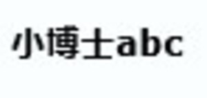
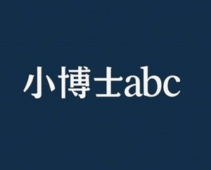

Trade Mark Journal No.2025/052 26 December 2025
UK00004307714 9 December 2025 (9,35,41)
Mark 1

Mark 2

- Class 9
- Education software.
- Class 35
- Career advisory services (other than education and training advice).
- Class 41
- Education; Vocational education; Pre-school education; Education and training; Academies [education]; Education and instruction; Services of schools [education]; Education services; University education services; Education, teaching and training; Academy education services; Education academy services; Academy services (Education -); Vocational education and training services; Music education; Training and education services; Education and training services; Education and instruction services; Education examination; Kindergarten services [education or entertainment]; Provision of education courses; Educational services for providing courses of education; Career counseling [education]; Higher education services; Provision of training and education; Provision of education and training; Providing of education; Entertainment, education and instruction services; Education academy services for teaching languages; Education academy services for teaching art history; Education information; Information (Education -); Education services relating to vocational training; Primary education services; Adult education services; Linguistic education and training services; Boarding school education; Education and training consultancy; Primary education services relating to literacy; Further education; Education academy services for teaching acting; Musical education services; Technological education services; Online education services; Lingual education; Management of education services; Management education services; Education services related to the arts; Career counselling relating to education and training; Educational services provided by institutes of higher education; Club education services; Education and training in the field of music and entertainment; Research in the field of education; Education information services; Vocational guidance [education or training advice]; Secondary school educational services; Education services relating to business training; Educational and teaching services; Career counselling [training and education advice]; Career advisory services (education or training advice); English language education services; Provision of facilities for education; Organization of competitions for education or entertainment; Foreign language education services.
Sheng Global Education Limited